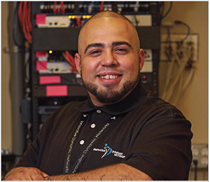

All Under One Roof - Job Center
On average, 20,000 customers enter through the UMOS Job Center doors each month. The UMOS Comprehensive Job Center, located in Milwaukee, Wisconsin, serves job seekers, program participants, employers and the general community by providing easy access to a customer-driven, comprehensive array of integrated employment, educational, training, and economic development services. The UMOS Job Center is a collaboration of public entities that are committed to defining and creating a comprehensive workforce development system. The following programs, direct services and supportive services are provided through the UMOS Job Center.
Fernando had a lot of difficulty in finding a job on his own. He was frustrated. Fernando is a responsible father and wanted to show that by providing for his children. However, he felt he was being prejudged because of his previous incarceration record. UMOS partnered with Innovative Dynamic Networks, Inc. (IDN), an information technology infrastructure and networking consulting company in Racine. Lucky for Fernando, the company’s owner believes in giving individuals a second chance. Innovative Dynamic Networks, Inc. provided with Fernando the opportunity to interview for the position of Low Voltage Technician, installing wiring for various projects such as security systems or Internet servers. Fernando shined during the interview. Today, Fernando is working as a Low Voltage Technician at Innovative Dynamic Networks, Inc., where he continues to increase his knowledge and skills. “This is the best job I ever had. I really enjoy going to work every day and like everyone I work with. Thank you, UMOS and IDN for this great opportunity” - Fernando Guerrero